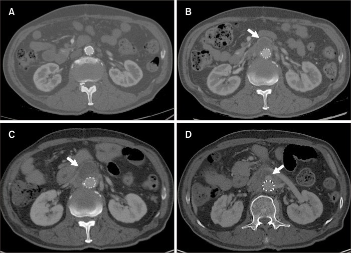
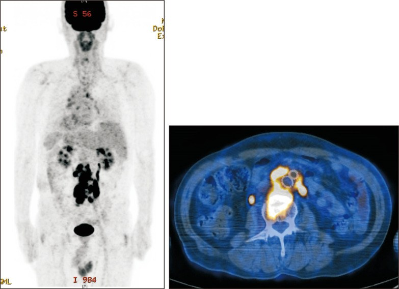

148 — Nhiễm trùng mảnh ghép nội mạch động mạch chủ: MAGIC, PET/CT và quyết định lấy hay giữ mảnh ghép / Aortic endograft infection: MAGIC criteria, FDG-PET/CT and the explant-versus-preserve decision
Tags: pattern:tu-dich-quanh-manh-ghep pattern:khi-quanh-manh-ghep vung:dong-mach-chu score:MAGIC protocol:CTA-bung protocol:PET-FDG incidentaloma:tu-dich-quanh-manh-ghep
Mức chắc chắn (certainty): tổng hợp y văn (literature synthesis) — tiêu chuẩn MAGIC + số liệu hình ảnh lấy từ bài tổng quan toàn văn (PMC10512004), phản biện từ meta-analysis (PMC10613822) và 2 cohort gần (PMC13376498, PMC13661717); kỹ thuật PET/CT từ nghiên cứu 152 ca (PMC10611872). Ca trong quiz là ca nguyên văn, giữ đúng mô tả hình gốc.
Câu chốt: sau EVAR, một ít khí và một ít dịch quanh mảnh ghép là BÌNH THƯỜNG — chẩn đoán nhiễm trùng không dựa vào "có khí/có dịch" mà dựa vào THỜI GIAN (khí ≥ 7 tuần, dịch ≥ 3 tháng sau EVAR = tiêu chuẩn MAGIC chính) và bối cảnh (sốt, cấy máu, khí tăng dần, giả phình miệng nối). Điều trị chuẩn là lấy mảnh ghép + tái tạo mạch; giữ mảnh ghép chỉ khi nguy cơ mổ không chấp nhận được và KHÔNG có rò động mạch–ruột.
1. Tổng quan bệnh học – cơ chế hình ảnh (TẠI SAO)
- Tần suất: nhiễm mảnh ghép nội mạch (aortic endograft infection — AEI) khoảng 0,6% sau EVAR (khoảng 0,2–8% tuỳ tiêu chuẩn và thời gian theo dõi) (PMC10512004); gộp 23 nghiên cứu: 0,4% sau EVAR và 1,0% sau mổ hở (PMC10613822). Tuy hiếm nhưng tử vong 1 năm 28,7% ở nhóm lấy mảnh ghép (PMC10613822).
- TẠI SAO nhiễm dai dẳng: mảnh ghép Dacron/ePTFE là dị vật không có mạch máu → bạch cầu và kháng sinh không vào được, vi khuẩn sống trong màng sinh học (biofilm). Vì thế bệnh cảnh thường âm ỉ: sốt nhẹ/kéo dài, gầy sút, CRP tăng, cấy máu chỉ dương 54% (PMC13376498) — khác nhiễm trùng cấp thông thường.
- TẠI SAO "khí" không đủ để gọi nhiễm: lúc đặt mảnh ghép, một ít khí bị bẫy trong túi phình và tự tiêu trong vài tuần. MAGIC lấy mốc 7 tuần — khí quanh mảnh ghép ≥ 7 tuần sau EVAR, hoặc tăng thể tích khí qua các lần chụp, mới là tiêu chuẩn chính (PMC10512004).
- TẠI SAO "dịch" cũng vậy: sau EVAR có thể tồn tại seroma quanh mảnh ghép; MAGIC lấy mốc 3 tháng — dịch quanh mảnh ghép ≥ 3 tháng sau EVAR là tiêu chuẩn chính. Dịch nhiễm thường bờ dày, ngấm thuốc, có bọt khí, và to ra dù đã dùng kháng sinh; máu tụ/seroma đơn thuần thì bờ mỏng, không khí, ổn định hoặc nhỏ dần.
- TẠI SAO FDG-PET/CT hữu ích nhưng không hoàn hảo: ổ viêm nhiễm có đại thực bào hoạt hoá → tăng tiêu thụ glucose → ngấm FDG. Tuy nhiên mảnh ghép gây phản ứng hạt (granulomatous reaction) quanh thành mạch, ngấm đều dọc mảnh ghép; đồng thời không có ngưỡng SUVmax được chuẩn hoá. Vì thế phải đọc KIỂU NGẤM: khu trú/không đồng nhất quanh mảnh ghép = nghi nhiễm, đều–lan toả dọc thành = phản ứng lành. Nghiên cứu 152 ca: Se 91%, Sp 72%, độ chính xác 88% (PMC10611872).
- Dịch tễ – vi khuẩn: 63% khởi phát muộn (≥ 3 tháng sau can thiệp); sốt 54% (gần nửa không sốt), nhiễm khuẩn huyết 48%; S. aureus là tác nhân đơn loài hay gặp nhất (24%), 24% đa loài (PMC13376498). Đa loài (35,7% trong 227 đợt) là yếu tố độc lập làm tăng tử vong: HR 2,94 (1,60–5,41) (PMC13661717).
- Yếu tố nguy cơ đáng nhớ: can thiệp cấp cứu, nhiễm trùng vùng bẹn/truy cập, nhiễm trùng ở xa trong 3 tháng, thủ thuật lại (re-intervention), nằm viện kéo dài trước mổ, đái tháo đường/suy thận/dùng corticoid (PMC10512004). Trong ca 1 dưới đây, bệnh nhân đã dùng kháng sinh 3 tuần vì sốt ngay trước EVAR — đúng bối cảnh "đặt mảnh ghép vào vùng nghi nhiễm".

Bệnh nhân EVAR nơi khác. (A) 1 tháng sau EVAR: không thấy nhiễm. (B) 7 tháng: sốt, tụ dịch sau phúc mạc quanh bộ phận cố định trên thận (mũi tên). (C) Sau 1 tháng kháng sinh: dịch tăng, không đáp ứng. (D) 1 tuần sau: xuất hiện túi giả phình (mũi tên) ngang mức tĩnh mạch thận trái. Nguồn: Kim YW, Vasc Specialist Int 2023;39:26 (PMC10512004), Fig. 1, CC BY-NC 4.0.2. Mẫu hình + chẩn đoán phân biệt theo hình thái quanh mảnh ghép (Gamut)
- Khí quanh mảnh ghép:
- Bình thường sớm sau EVAR (khí bẫy trong túi, tự hết).
- Nhiễm mảnh ghép — khí tồn tại ≥ 7 tuần hoặc tăng dần, kèm dịch bờ dày.
- Rò động mạch–ruột (aortoenteric fistula — AEF) — khí trong túi + dày ruột kề + mất lớp mỡ giữa ĐMC và ruột, có thể kèm chảy máu "báo trước" (sentinel bleed).
- Nhiễm trùng hoại tử do vi khuẩn sinh hơi (hiếm, bệnh cảnh tối cấp).
- Dịch quanh mảnh ghép:
- Seroma lành sau EVAR (< 3 tháng, bờ mỏng, không khí, nhỏ dần).
- Máu tụ (hematoma) — đậm độ cao hơn, không ngấm thuốc, tự thoái triển.
- Dịch nhiễm — bờ dày ngấm thuốc, có khí, to ra dù kháng sinh.
- Rò lưu lượng thấp qua miệng nối (type I/III endoleak) — dịch giả "quanh mạch" nhưng thực chất là máu lưu thông.
- Túi phình to ra sau EVAR: endoleak type I (miệng nối), type II (nhánh ngược dòng), type III (rách mảnh ghép) · nhiễm (kèm khí/dịch) · giả phình miệng nối do nhiễm.
- Giả phình miệng nối (anastomotic pseudoaneurysm): cơ học hoặc nhiễm; nhiễm là nguyên nhân phải nghĩ khi có khí/dịch và khi xuất hiện sau một đợt sốt.
- Viêm quanh mảnh ghép vô khuẩn (aseptic peri-graft inflammation): ngấm FDG lan toả, không khí, cấy âm, không tiến triển — không phải nhiễm, tránh mổ oan.
- Nhiễm lan tới cột sống: viêm đĩa–đốt sống (spondylodiscitis) cùng mức, đau lưng + sốt.
3. Bảng so sánh phân biệt (ma trận đối chiếu)
| Thực thể (entity) | Hình ảnh điển hình (CT/PET) | Chốt vào (rule-in) | Chốt loại (rule-out) | Gợi ý xác nhận |
|---|---|---|---|---|
| Nhiễm mảnh ghép (AEI) | Dịch bờ dày ngấm thuốc + khí quanh mảnh ghép; khí/dịch tăng dần; FDG khu trú | Khí ≥ 7 tuần hoặc dịch ≥ 3 tháng sau EVAR; khí tăng; cấy máu/dịch (+) | Khí mất sau vài tuần, dịch nhỏ dần, FDG đều dọc thành → không nhiễm | MAGIC + cấy máu ×2, chọc hút dịch dưới hướng dẫn |
| Thay đổi lành sau EVAR | Ít dịch/khí sớm, bờ mỏng, không ngấm | < 7 tuần (khí) / < 3 tháng (dịch), ổn định | Khí tăng hoặc dịch to ra → không phải lành | So phim cũ đúng bình diện |
| Endoleak type II | Túi còn dịch/máu lưu thông, không khí mới, nhánh nuôi ngược dòng | Thấy nhánh nuôi + túi không nhỏ lại | Có khí + dịch bờ dày + sốt → nghĩ nhiễm hơn endoleak | CTA các thì, DSA nếu cần |
| Rò động mạch–ruột (AEF) | Khí trong túi + dày ruột kề, mất mặt phẳng mỡ; sentinel bleed | Khí + dày ruột + xuất huyết tiêu hoá | Không có khí/dày ruột, không chảy máu → ít nghĩ AEF | CT + nội soi (cẩn thận), mổ cấp cứu khi chảy máu |
| Máu tụ/seroma lành | Khối dịch bờ mỏng, không khí, không ngấm; ổn định | Không khí, không ngấm, nhỏ dần | Bờ dày ngấm + khí → nghi nhiễm | Theo dõi CT 3–6 tháng |
| Viêm quanh mảnh ghép vô khuẩn | FDG lan toả đều, không dịch/khí, cấy âm | Ngấm đều dọc thành + cấy âm + không tiến triển | Ngấm khu trú + khí/dịch → nhiễm | PET/CT lặp lại, cấy mô |
| Nhiễm trùng huyết từ ổ khác | FDG ập vào ổ ngoài mạch (tiết niệu, phổi, cột sống), mảnh ghép bình thường | Ổ ngoài mạch rõ | Chỉ ngấm quanh mảnh ghép → nghĩ AEI | Cấy máu, PET toàn thân |

PET/CT ở bệnh nhân nhiễm mảnh ghép sau EVAR: ngấm FDG quanh mảnh ghép động mạch chủ (trái: MIP; phải: mặt cắt axial fusion). Lưu ý ngấm sinh lý ở đường tiết niệu — đừng đọc thành ổ nhiễm thứ hai. Nguồn: Kim YW, Vasc Specialist Int 2023;39:26 (PMC10512004), Fig. 2, CC BY-NC 4.0.4. Protocol chụp + tiêu chuẩn MAGIC + thuật toán điều trị
4.1 Chụp
- CTA động mạch chủ bụng (lát ≤ 1 mm), thì động mạch + thì tĩnh mạch/muộn để phân biệt dòng thuốc trong túi (endoleak) với dịch không ngấm; đo đậm độ dịch (HU), ghi kích thước túi và bề dày/kiểu ngấm của bờ dịch.
- So sánh với phim ngay sau EVAR — giá trị lớn nhất của CT nằm ở động học: khí/dịch tăng hay giảm.
- FDG-PET/CT khi CT chưa chốt, khi cấy âm, hoặc để tìm ổ nhiễm ngoài mạch; đọc theo kiểu ngấm (khu trú/không đồng nhất vs đều dọc thành) và luôn đối chiếu với CT, không dựa SUVmax đơn thuần (PMC10611872).
- Xạ hình bạch cầu đánh dấu (labeled leukocyte SPECT/CT) là lựa chọn thay thế khi PET không sẵn; hạn chế: mất thời gian (2–4 giờ và 20–24 giờ) và tương tác với hoạt động sinh lý ở ruột/tủy xương (PMC10512004).
4.2 Tiêu chuẩn MAGIC (Management of Aortic Graft Infection Collaboration, 2016)
| Nhóm | Tiêu chuẩn chính (major) | Tiêu chuẩn phụ (minor) |
|---|---|---|
| Lâm sàng/ngoại khoa | Mủ quanh mảnh ghép/túi khi mổ; vết mổ hở lộ mảnh ghép/đường rò; rò (AEF/ABF); đặt mảnh ghép vào vùng đã nhiễm | Dấu hiệu viêm khu trú (đỏ, nóng, sưng, chảy mủ, đau); sốt ≥ 38°C |
| Hình ảnh | Dịch quanh mảnh ghép ≥ 3 tháng sau EVAR; khí ≥ 7 tuần sau EVAR; khí tăng thể tích trên phim nối tiếp | Khí/dịch/viêm mô quanh mảnh ghép nghi nhiễm; túi to ra; giả phình; dày ruột kề; viêm đĩa–đốt sống; FDG-PET dương; xạ hình bạch cầu dương |
| Xét nghiệm | Vi khuẩn từ mảnh ghép lấy ra, từ mẫu mổ, từ chọc hút dịch dưới hướng dẫn | Cấy máu (+) không có ổ khác; ESR/CRP/bạch cầu tăng với AEI là nguyên nhân khả dĩ nhất |
- Nghi ngờ (suspected): 1 tiêu chuẩn chính HOẶC 2 tiêu chuẩn phụ từ 2 nhóm khác nhau.
- Chẩn đoán (diagnosed): 1 tiêu chuẩn chính + ít nhất 1 tiêu chuẩn khác từ nhóm khác (PMC10512004).
4.3 Điều trị — số liệu để hội chẩn
| Chiến lược | Kết cục chính | Lưu ý phản biện |
|---|---|---|
| Lấy mảnh ghép + tái tạo tại chỗ (allograft/vein/prosthesis tẩm kháng sinh) | Tử vong chu phẫu 18–30%; tái tạo bằng allograft/vein: tử vong 30 ngày 12,5%, biến chứng nặng 45,8% (PMC10512004) | Là chuẩn, nhưng bệnh nhân được chọn mổ thường trẻ/khoẻ hơn |
| Giữ mảnh ghép + kháng sinh ức chế | Chỉ định khi nguy cơ mổ không chấp nhận được và KHÔNG có AEF; trong cohort 46 ca: thành công 60%, tái phát 33% (so với 16% ở nhóm mổ) (PMC13376498) | Nhóm "giữ" trong meta-analysis chỉ 40/873 (4,6%) → chọn lọc nặng, so sánh trực tiếp bị confounding |
| So sánh gộp (meta-analysis) | Tử vong 30 ngày RR 0,98 (0,40–2,38); 1 năm RR 3,44 (1,60–7,42) nghiêng về giữ mảnh ghép (PMC10613822) | Không phải thử nghiệm ngẫu nhiên; đừng đọc thành "giữ tốt hơn" cho mọi ca |
| Dự phòng | Kháng sinh dự phòng rộng phổ giảm nhiễm vết mổ RR 0,25 và nhiễm mảnh ghép sớm RR 0,31 (PMC10512004) | Loại bỏ ổ nhiễm răng/miệng, tiết niệu, da trước EVAR |
flowchart TD
A[Nghi nhiễm mảnh ghép nội mạch] --> B[CTA bụng có cản quang, so phim ngay sau EVAR]
B --> C{Khí trên 7 tuần hoặc dịch trên 3 tháng hoặc khí tăng dần?}
C -->|Có| D[Đủ tiêu chuẩn MAGIC chính]
C -->|Không| E[Cấy máu 2 lần + PET-CT FDG]
E --> F{Ngấm khu trú quanh mảnh ghép hoặc cấy dương?}
F -->|Có| D
F -->|Không| G[Theo dõi CT 3-6 tháng]
D --> H{Có rò động mạch ruột hoặc giả phình hoặc nhiễm khuẩn huyết?}
H -->|Có| I[Lấy mảnh ghép + tái tạo tại chỗ + kháng sinh dài]
H -->|Không| J{Nguy cơ mổ chấp nhận được?}
J -->|Có| I
J -->|Không| K[Kháng sinh ức chế dài hạn + theo dõi sát]
5. Biến thể bình thường và cạm bẫy
- Khí sớm sau EVAR là bình thường — đừng gọi nhiễm nếu chụp trong 7 tuần đầu mà bệnh nhân không sốt, CRP không tăng. Ngược lại, khí ở tháng thứ 7 như ca 1 là bất thường.
- Dịch < 3 tháng có thể là seroma; chỉ chọc hút khi có chỉ định (nghi nhiễm, cần cấy) — chọc bừa có thể đưa vi khuẩn vào mảnh ghép.
- FDG ngấm đều dọc mảnh ghép = phản ứng hạt quanh dị vật, không đồng nghĩa nhiễm; và đường tiết niệu luôn ngấm sinh lý (ca 2) — đọc trên fusion để tránh "ổ nhiễm thứ hai" giả.
- Cấy máu âm không loại trừ (dương chỉ 54%); cần cấy mô/chọc hút hoặc PCR 16S khi lâm sàng vẫn nghi.
- AEF là cấp cứu — "chảy máu báo trước" rồi tạm ổn không được trì hoãn; không điều trị bảo tồn khi có AEF (PMC10512004).
- Đừng bỏ sót ổ ngoài mạch: viêm đĩa–đốt sống, nhiễm tiết niệu, viêm phổi — vì 24% ca đa loài và một phần nhiễm khởi phát từ ổ xa (PMC13376498, PMC13661717).
- Bẫy "túi to ra = endoleak" — túi to kèm khí/dịch bờ dày phải nghĩ nhiễm, không chỉ đi tìm endoleak rồi can thiệp nội mạch lần hai (thêm dị vật vào ổ nhiễm).
6. Tự lượng giá — Blind Quiz ngay trên trang tĩnh
Ca 1 — Bệnh nhân EVAR nơi khác, trước mổ đã dùng kháng sinh 3 tuần vì sốt. Bốn lát CT theo thời gian; hãy đọc theo trình tự A → D.
- Gợi ý lâm sàng: 1 tháng sau EVAR không triệu chứng; tháng thứ 7 sốt trở lại.
- Câu hỏi: (1) Ở B có gì mới so với A? (2) Sau 1 tháng kháng sinh (C), đáp ứng hay không? (3) D xuất hiện gì và vì sao phải mổ?
Bấm để hiện đáp án (findings + chẩn đoán)
- Findings: (A) 1 tháng sau EVAR: không nhiễm. (B) 7 tháng, sốt: tụ dịch sau phúc mạc quanh bộ phận cố định trên thận (mũi tên). (C) Sau 1 tháng kháng sinh: dịch tăng, không đáp ứng. (D) 1 tuần sau: giả phình dạng túi (mũi tên) + dịch, ngang tĩnh mạch thận trái.
- Chẩn đoán: nhiễm mảnh ghép nội mạch với giả phình miệng nối do nhiễm. Dịch ≥ 3 tháng sau EVAR + khí/tăng dần + không đáp ứng kháng sinh = tiêu chuẩn MAGIC chính; giả phình là dấu hiệu nguy cơ vỡ, phải lấy mảnh ghép.
- Vì sao "3 tuần kháng sinh trước EVAR" quan trọng: đặt mảnh ghép vào vùng nghi nhiễm là tiêu chuẩn chính của MAGIC — đây là điểm mấu chốt trong tiền sử.
- Phản biện: ca đơn lẻ, không nêu vi khuẩn; nhưng diễn tiến A→D là hình mẫu của nhiễm mảnh ghép: dịch xuất hiện muộn, không đáp ứng kháng sinh, tiến tới giả phình.
- Nguồn: Kim YW, Vasc Specialist Int 2023;39:26 (PMC10512004), Fig. 1, CC BY-NC 4.0.
Ca 2 — Cùng bệnh cảnh nghi nhiễm mảnh ghép, nhưng CT chưa chốt. Ảnh PET/CT dưới đây đọc thế nào?
- Gợi ý: sốt dai dẳng, CRP tăng, cấy máu chưa dương.
- Câu hỏi: (1) Ổ ngấm chính ở đâu? (2) Có ổ thứ hai không, và đó là gì? (3) PET/CT thay được CT hay không?
Bấm để hiện đáp án (findings + chẩn đoán)
- Findings: ngấm FDG quanh mảnh ghép động mạch chủ bụng trên cả MIP và axial fusion; ngoài ra ngấm ở hai đường tiết niệu — đây là bài tiết sinh lý của FDG qua thận–niệu quản–bàng quang, không phải ổ nhiễm.
- Chẩn đoán: hình ảnh phù hợp nhiễm mảnh ghép (tiêu chuẩn MAGIC phụ: FDG-PET dương). Giá trị nằm ở bối cảnh: CT không chốt + cấy máu âm → PET giúp định hướng và tìm ổ ngoài mạch.
- Bài học: (1) đọc kiểu ngấm (khu trú/không đồng nhất quanh mảnh ghép) chứ không chỉ "sáng/không sáng"; (2) không có ngưỡng SUVmax chuẩn hoá, và phản ứng lành quanh mảnh ghép cũng ngấm (PMC10611872); (3) PET không thay CTA — cần CT để thấy khí, dịch, giả phình, rò.
- Nguồn: Kim YW, Vasc Specialist Int 2023;39:26 (PMC10512004), Fig. 2, CC BY-NC 4.0.
Bài liên quan chéo
- 100 – Tổng quan hệ Bụng
- 147 – Sốt & ổ nhiễm ẩn sau can thiệp mạch
- 170 – Phình động mạch chủ bụng
- 171 – Bóc tách động mạch chủ bụng
- 172 – Theo dõi sau EVAR/TEVAR
- 932 – An toàn bức xạ trong can thiệp
Ảnh
148_nhiem-manh-ghep_CT_PMC10512004-Fig1-CCBYNC.jpg— Kim YW, Vasc Specialist Int 2023;39:26, Fig. 1, CC BY-NC 4.0.148_nhiem-manh-ghep_PETCT_PMC10512004-Fig2-CCBYNC.jpg— Kim YW, Vasc Specialist Int 2023;39:26, Fig. 2, CC BY-NC 4.0.- Chi tiết giấy phép từng ảnh:
images/CREDITS.md.
Không dùng để chẩn đoán độc lập khi chưa có người hướng dẫn.